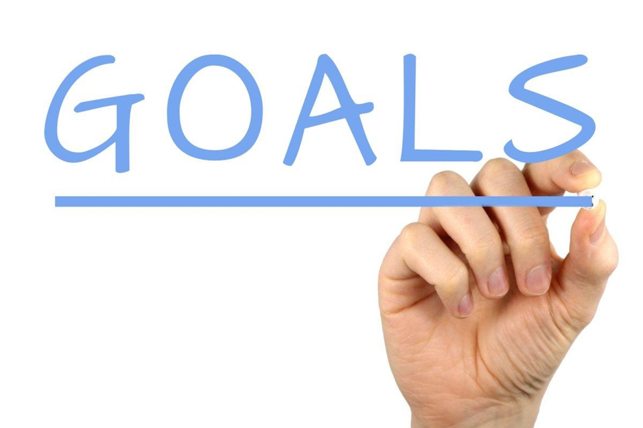
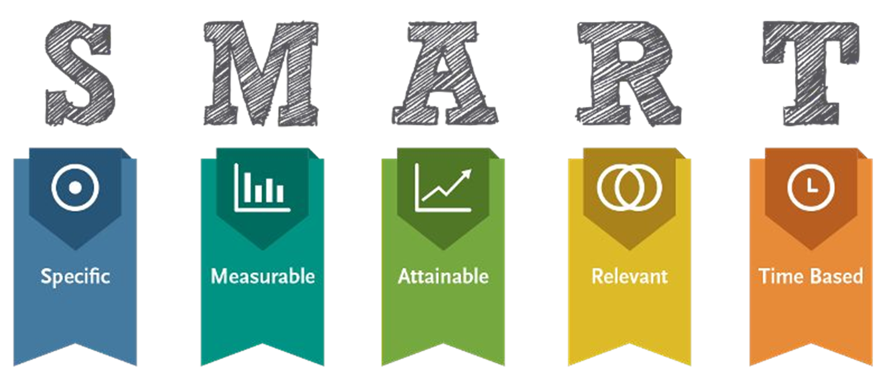

If you have difficulty answering these questions, then hopefully this lesson will help you resolve those doubts!
Accordion
Let’s read an article titled, “What’s university for, anyway?” by Steve Pailkin
Post-Reading Question
Now, we will read this next article by Ron Srigley, entitled:
“Dear Parents: Everything You Need to Know About Your Son and Daughter’s University but Don’t”.
Browse: lareviewofbooks.org/article/dear-parents-everything-you-need-to-know
Post-Reading Questions

|
What Are Goals?
|
|

Goals should not be vague. If they are, the path to achieving them is not so
clear cut.
○ What do I want?
○ Why is achieving the goal important?
○ Who is involved in me reaching the goal?
○ Which resources are needed?
○ What limits are there to me attaining the goal?
● What is being referred to here, is how you will know when the goal is achieved.
● For example, if you have a goal to do well in your course, then you cannot merely make the objective to increase your marks. How will you ever be able to tell if it’s accomplished. For instance, going from 45% to 46% is an improvement in marks, but this may not be as precise as you’re looking for.
● If you have a clear target to work towards, it will be easy to tell when it is accomplished.
Making sure a goal is achievable is one of the trickiest aspects of SMART goals.
● You don’t ever want to sell yourself short and not go after something difficult. However, setting a goal that is unattainable can lead to frustration and ultimately you giving up.
○ For example - if you set a goal for achieving 105% in a course, you need to understand if that is really realistic
● To avoid this, it is best we set goals that push our limits but are within the scope of our abilities. Over time, these achievable goals can lead to bigger and better goals that were thought unattainable in the beginning.
● Relevance plainly means a goal lines up with your values and that it matters to you. This goes for both large and small goals.
● To ensure you are working towards a relevant goal, ask yourself these questions:
○ Is this what I want?
○ Does it make sense for me to have this goal?
○ Do my values align with the outcome?
○ Are my daily goals relevant to my larger goal?
● Each one of our goals must have a target date when it will be accomplished.
● Having this time frame generates a sense of urgency in us. When we look at a goal and declare a date when it will be achieved, our priorities are immediately set.
● This will help to keep us on track and focused. If a goal is not time bound, then it will likely fall to the wayside.
|
End Of Class Question Provide an example of a SMART goal (it doesn’t have to be academic-related!) |